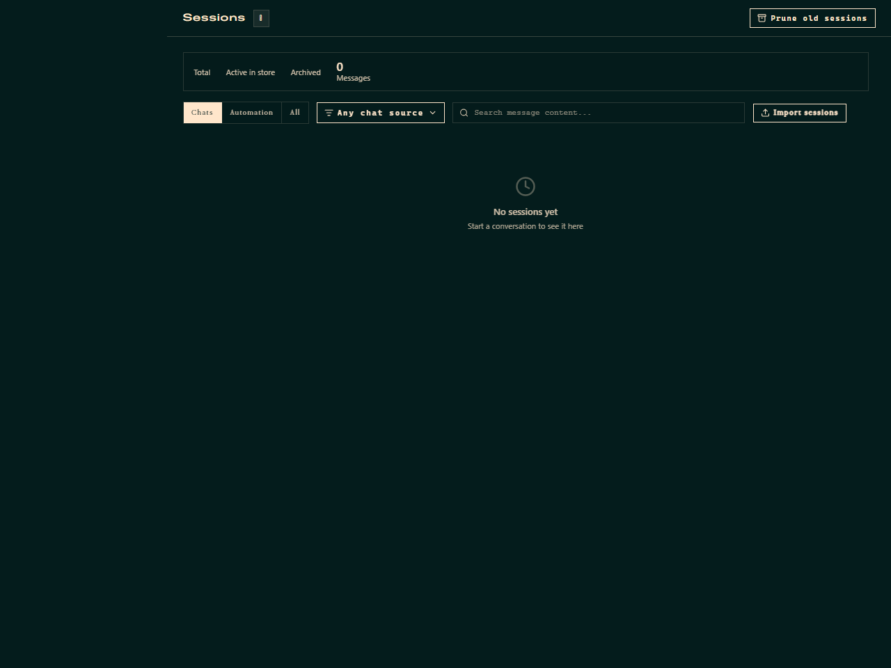
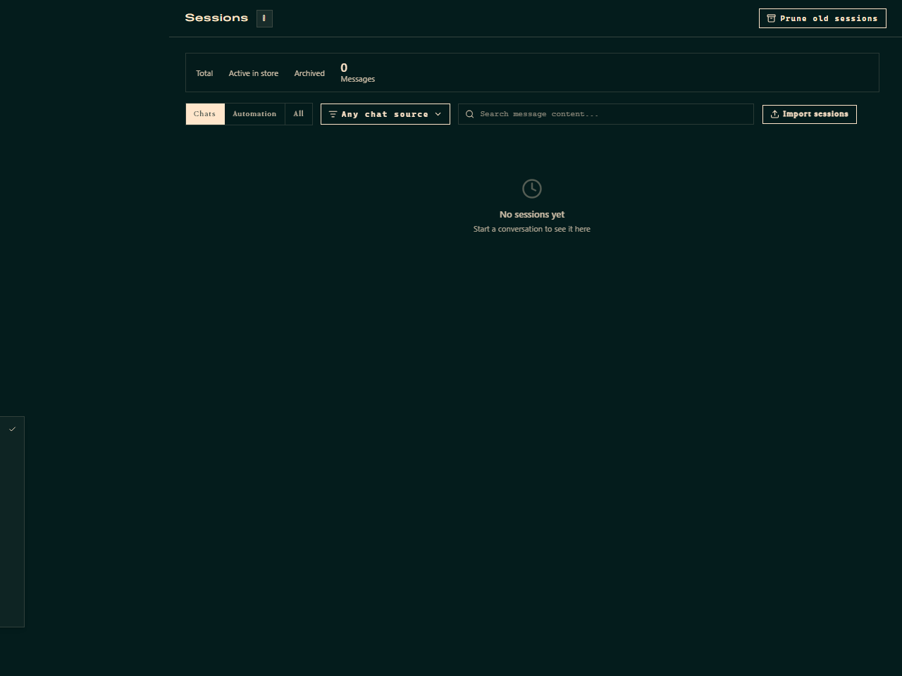
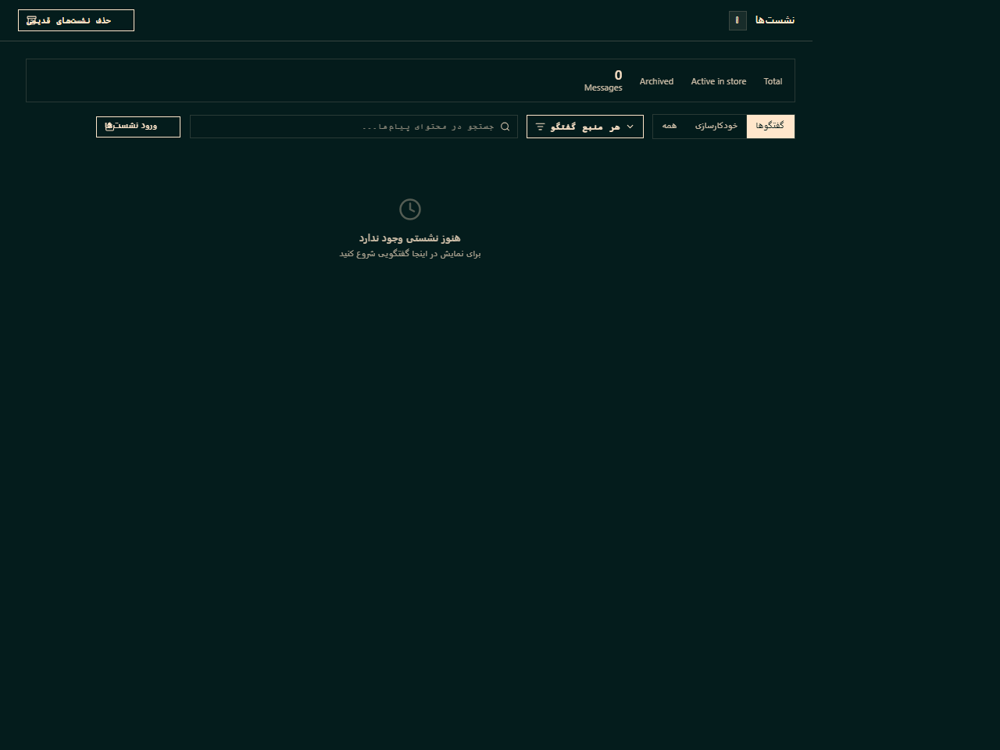
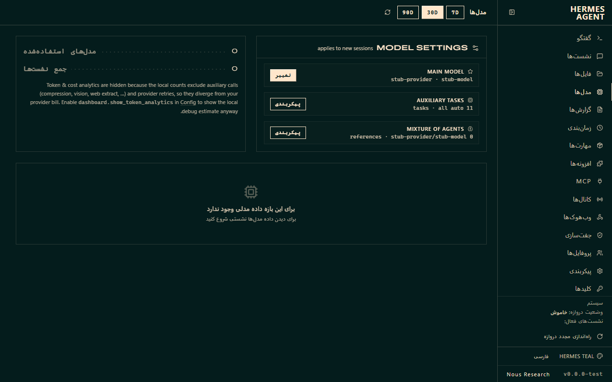
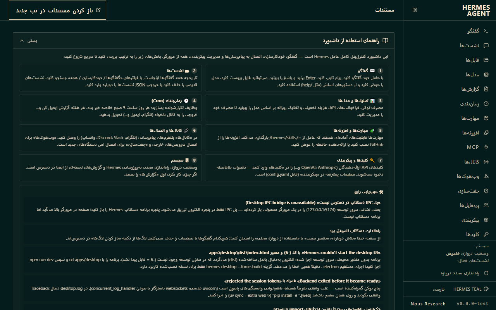

توضیح گامبهگام همه بخشهای برنامه: از گفتگو با عامل و نشستها تا مهارتها، حافظه، پیامرسانها، وظایف زمانبندیشده و تنظیمات.
Hermes Desktop رابط گرافیکی دسکتاپ برای Hermes Agent — عامل هوش مصنوعی خودبهبوددهنده ساخت Nous Research — است. این عامل از تجربه مهارت میسازد، حافظه ماندگار دارد، گفتگوهای گذشته را جستجو میکند و با هر نشست شناخت عمیقتری از شما پیدا میکند.
پس از وظایف پیچیده مهارت جدید میسازد و مهارتهای موجود را در طول استفاده بهبود میدهد.
خاطرات و نمای کاربر بین نشستها حفظ میشود؛ گفتگوهای گذشته با جستجوی متنی قابل بازیابیاند.
ترمینال، داشبورد، دسکتاپ، Telegram، Discord، Slack، WhatsApp و Signal — همه از یک دروازه واحد.
گزارش روزانه، پشتیبان شبانه یا ممیزی هفتگی — همه به زبان طبیعی و بدون حضور شما.
Nous Portal، OpenRouter، OpenAI، Anthropic، نقطه پایانی محلی (Ollama و vLLM) و دهها ارائهدهنده دیگر.
این برنامه از فارسی پشتیبانی میکند و کل رابط بهصورت خودکار راستبهچپ (RTL) میشود.
این بخش از صفر تا اجرای برنامه را پوشش میدهد: پیشنیازها، نصب نسخه آماده یا اجرا از سورس، و اولین اجرا.
| مؤلفه | حداقل نسخه | توضیح |
|---|---|---|
| Node.js | 22.22 / 24.11 / 26+ | برای اجرای رابط دسکتاپ (نسخه LTS توصیه میشود). |
| Python | 3.11 – 3.13 | برای باکاند عامل (Hermes Agent). |
| سیستمعامل | — | ویندوز ۱۰/۱۱ (نیتیو یا WSL2)، macOS یا Linux. |
| اتصال اینترنت | — | برای دریافت مدلها و بهروزرسانیها؛ اجرای روزانه بدون اینترنت هم ممکن است (مدل محلی). |
این تصاویر از خودِ برنامه (نسخه فارسیشده) گرفته شدهاند و دقیقاً همان چیزی را نشان میدهند که در اولین اجرا میبینید:





پیشنهاد ما بعد از نصب: بهجای واردکردن کلید API هر ارائهدهنده بهصورت جداگانه، یکبار با Nous Portal وارد شوید. یک اشتراک، بیش از ۳۰۰ مدل و همزمان دروازه ابزارها (Tool Gateway): جستجوی وب، تولید تصویر، تبدیل متن به گفتار (TTS) و خودکارسازی مرورگر — همه از طریق همان اشتراک.
hermes setup --portalportal.nousresearch.com باز میکند. کد را در مرورگر تأیید کنید تا ورود کامل شود. همین فرمان معادل hermes portal است.hermes یا بازکردن برنامه دسکتاپ کافی است.# بررسی سلامت اتصال و مسیریابی ابزارها پس از راهاندازی
hermes portal info
hermes portal toolshermes portal info: خلاصهٔ وضعیت ورود و مسیر سرویسدهی هر ابزار — «مدیریتشده» از طریق Portal یا موتور محلی (مثل Edge TTS و مرورگر محلی Playwright که بدون هیچ کلیدی کار میکنند). این فرمان اصلیِ بازرسی است (hermes portal status هم بهعنوان نام قدیمی همین کار را میکند).hermes portal open صفحهٔ اشتراک را در مرورگر باز میکند؛ روشن/خاموشکردن تکتک ابزارها و انتخاب ارائهدهندهٔ هر کدام با hermes setup tools است — مثلاً میتوانید وب و تولید تصویر را به Portal وصل کنید ولی TTS را روی حالت محلی رایگان نگه دارید.برای کسانی که فقط میخواهند استک محلی بالا بیاید: هر گام یک فرمان است. در صورت بروز خطا، جدول عیبیابی (بخش ۱۹) را ببینید.
npm install (تکقفلنامه: هرگز از زیرپوشهها مثل ui-tui نصب نکنید) و برای بکاند pip install -e ".[web,dev]". آزمون سلامت: hermes doctor.hermes setup --portal: وارد حساب Nous Portal شوید، مدل را انتخاب کنید و دروازه ابزارها (وب، تصویر، TTS، مرورگر) همانجا وصل میشود. برای انتخاب تکتک ابزارها: hermes setup tools.hermes gateway run. بازرسی: hermes gateway status باید «در حال اجرا» را نشان دهد.hermes dashboard --port 9119؛ پس از چند ده ثانیه http://127.0.0.1:9119/ باز میشود (پرچم --no-open هم هست).hermes config set display.language fa. فونت Vazirmatn و چیدمان راستبهچپ خودکار فعال میشود.hermes doctor باید بدون هشدار وابستگی تمام شود و نوار وضعیت داشبورد «وضعیت دروازه: در حال اجرا» را نشان دهد. برای شروع خودکار پس از هر ریاستارت ویندوز، یکبار start-hermes-stack.cmd را اجرا کنید.بخش بزرگی از تستها به ارائهدهندههای اختیاری وابستهاند که پیشفرض نصب نمیشوند؛ بدون آنها pytest بهجای پاس، skip میزند یا خطای جمعآوری میدهد. همه در pyproject.toml تحت [project.optional-dependencies] پین شدهاند.
| بستهٔ اضافی | دستور نصب | چه چیزی را باز میکند |
|---|---|---|
dev | pip install -e ".[dev]" | خود pytest و pytest-asyncio، mcp، httpx، ruff و ty — پیشنیاز هر اجرای تستی |
messaging | pip install -e ".[messaging]" | تستهای تلگرام، Discord، Slack و کانالهای پیامرسانی (tests/gateway، tests/tools) |
anthropic | pip install -e ".[anthropic]" | تستهای آداپتور Anthropic در tests/agent (سایر ارائهدهندهها از طریق کلید API قلابی stub میشوند) |
web | pip install -e ".[web]" | سرور داشبورد/دروازه که تستهای یکپارچگی به آن وصل میشوند |
| افزونههای pytest | pip install pytest-timeout pytest-xdist | اجرای قطعهقطعهٔ suite دروازه روی ویندوز با تایماوت در هر تست (هر دو فقط برای توسعه؛ پین نشدهاند) |
پنجره برنامه از چند ناحیه تشکیل شده که هر کدام وظیفه مشخصی دارند:
| ناحیه | شرح |
|---|---|
| نوار عنوان | جستجوی سراسری نشستها، نماها و اقدامات؛ دکمههای نمایش/پنهان نوار کناری چپ و راست، باز کردن تنظیمات، گراف حافظه و ورود به حالت HUD. در حالت RTL جای دکمهها خودکار برعکس میشود. |
| نوار کناری چپ (نشستها) | فهرست گفتگوهای اخیر با جستجو، سنجاق، بایگانی و تراکم نمایش (فشرده / راحت / مفصل). با Ctrl/⌘ کلیک روی یک گفتگو آن را بایگانی کنید. |
| ناحیه کار (Workspace) | قلب برنامه: گفتگوی فعال، مرورگر فایل، مرورگر داخلی، ترمینالها و زبانهها اینجا باز میشوند. |
| نوار کناری راست | مرورگر فایل درختوارهای؛ میتوانید آن را پنهان کنید یا با view.flipPanes طرفش را عوض کنید. |
| نوشتار (Composer) | جعبه پیام پایین صفحه. شناور میشود، تاریخچه دارد و با @ به فایلها و آدرسها ارجاع میدهید. |
| نوار وضعیت | وضعیت دروازه، مدل فعال، مصرف توکن و پیامهای کوتاه برنامه. |
| حالت HUD | چیدمان شناور و فشرده روی صفحه — با view.toggleHud روشن/خاموش میشود و اندازه و جای آن قابل بازنشانی است. |
در نوشتار (Composer) تایپ کنید و با Enter بفرستید؛ با Shift+Enter خط جدید بگذارید. وقتی عامل در حال کار است میتوانید:
/model یا /usage را همینجا صدا بزنید.با voice.recordKey (میانبر قابل تنظیم) ضبط صدا را شروع کنید؛ گفتار به متن تبدیل و پاسخ عامل در صورت فعالبودن «خواندن خودکار پاسخها» با TTS خوانده میشود. ارائهدهندههای STT/TTS در بخش صوت تنظیمات پیکربندی میشوند.
در تنظیمات ← ظاهر میتوانید انتخاب کنید فراخوانی ابزارها چطور نمایش داده شوند:
به پیامها واکنش ایموجی بدهید (تپبکهای سبک iMessage)، با «قلبهای Vibe» از عامل تشکر کنید، و پیشنمایشهای غنی لینکها (YouTube و X) را با یکی از حالتهای «پرسیدن / همیشه / خاموش» فعال کنید.
هر گفتگو یک «نشست» است. نشستها در نوار کناری با تاریخ، پوشه پروژه و عنوان خودشان دیده میشوند.
هر فایلی که عامل در طول کار میسازد — کد، سند، تصویر، گزارش — در صفحه ساختهها جمع میشود تا بدون گشتن در گفتگو پیدا و بازشود.
مهارتها حافظه رویهای عاملاند: دستورالعملهای قابل استفاده مجدد که Hermes آنها را میسازد، ذخیره و در طول استفاده بهبود میدهد.
~/.hermes/skills/ زندگی میکنند.با دروازه (Gateway)، Hermes از Telegram، Discord، Slack، WhatsApp، Signal و ایمیل در دسترس است — همان عامل، همان حافظه، همان مهارتها.
hermes gateway setup و سپس hermes gateway start.display.language: fa).وبهوکها اجازه میدهند سرویسهای بیرونی (CI، فرمها، مانیتورینگ) با یک درخواست HTTP رویدادی را به عامل بدهند و پاسخ بگیرند.
یک صفحه یکنگاهی برای کنترل کل سیستم: وضعیت دروازه و نشستها، کارهای در جریان، وظایف پسزمینه و میانبرهای سریع به همه بخشها.
اگر فقط یک جا برای «چه خبر؟» میخواهید، همین است. از پالت فرمان (nav.commandPalette) هم میتوانید مستقیم به هر بخش بپرید.
وظایف تکرارشونده را به زبان طبیعی تعریف کنید؛ Hermes خودش برنامه زمانی میسازد و نتیجه را به پلتفرم دلخواه تحویل میدهد.
# نمونه از ترمینال
hermes cron add --schedule "0 9 * * *" --prompt "خلاصه اخبار دیروز را بده"
hermes cron listپروفایلها چند «هویت» جدا برای عاملاند: هر پروفایل مدل، کلیدها، حافظه، پوسته و حتی دروازه مستقل خودش را دارد.
coder با مدل کدنویسی و پوشه پروژه متفاوت؛ پروفایل writer با مدل متنی.صفحه عاملها نمای کلی از عاملهای در دسترس (محلی و ابری) و وضعیت اجرای آنهاست.
یک نشه بصری از حافظه عامل: مفهومها و خاطرات بهشکل گرههای ستارهای که با گفتگوهای بیشتر پرتر میشوند.
از نوار عنوان با «باز کردن گراف حافظه» باز میشود. برای دیدن اینکه عامل واقعاً چه چیزهایی از شما یاد گرفته، بهترین جاست.
تنظیمات یک پوشش تمامصفحه با نوار ناوبری اختصاصی است و جستجوی سراسری دارد. بالای صفحه یک نشان «اعمال به» میگوید تغییرات روی کدام پروفایل ذخیره میشوند.
زبان رابط دسکتاپ را انتخاب کنید. با انتخاب فارسی، کل رابط RTL میشود. تنظیم در ~/.hermes/config.yaml هم ذخیره میگردد.
حسابها (ورود مرورگری بدون کپی کلید)، کلیدهای API، و نقاط پایانی سفارشی سازگار با OpenAI (Ollama، vLLM، llama.cpp…).
مدل پیشفرض، پنجره زمینه، مدلهای جایگزین، استدلال و مدلهای کمکی هر وظیفه (بینایی، فشردهسازی، تولید عنوان، بازبینی، تأیید و…).
ثبت و مدیریت اتصالها: محلی، راه دور (HTTP/S)، SSH یا Hermes Cloud. سوئیچ بین دروازهها از صفحه نشستها انجام میشود و کار دروازههای دیگر ادامه پیدا میکند.
کلیدهای API ابزارها و اعتبارنامهها در .env. مجموعههای ابزار فعال (حافظه، ترمینال، جستجوی وب، تفویض و…) را همینجا روشن/خاموش کنید.
سرورهای Model Context Protocol را اضافه، فعال/غیرفعال و آزمایش کنید. ورود سریع از قطعههای mcp.json، فرمان npx/docker یا لینک Cursor پشتیبانی میکند.
سبک دستیار، نمایش استدلال، حداکثر نوبتهای عامل، پیوستهای تصویر و پوشه پیشفرض پروژه برای نشستهای جدید.
حالت روشن/تاریک/سیستم، پوستهها (نصب از VS Code Marketplace)، مقیاس رابط، فونت ترمینال، شفافیت پنجره، پسزمینه گفتگو و موجود زنده (Pet).
حالت تأییدها، مهلت تأیید، فهرست سفید فرمانها، سانسور اسرار و نقاط بازگشت فایل (Checkpoints) پیش از ویرایش.
حافظه ماندگار، پروفایل کاربر، سهمیههای کاراکتر، موتور زمینه و فشردهسازی خودکار گفتگوهای طولانی با آستانه و نسبت هدف.
تبدیل گفتار به متن (محلی یا OpenAI، Groq، ElevenLabs و…) و متن به گفتار (Edge، OpenAI، ElevenLabs، Piper و…) با صدای قابل انتخاب.
باکاند اجرای ترمینال (محلی، Docker، SSH، Singularity، Modal، Daytona)، پوشه کاری، مهلت فرمانها و متغیرهای محیطی قابل عبور.
اعلانهای سیستمعامل بهتفکیک نوع: تأیید لازم است، ورودی لازم است، پاسخ آماده، وظیفه پسزمینه تمام شد، هشدار اعتبار و افزونهها — بهعلاوه صدای پایان کار.
افزونههای دسکتاپ (رابط) و افزونههای عامل (ابزار، مهارت، سرور MCP، هوک و فرمان اسلش). نصب از مخزن Git با بازبینی پیش از نصب.
گفتگوهای بایگانیشده، بایگانی خودکار گفتگوهای کهنه و پوشه پیشفرض پروژه.
محدودهای خواندن فایل و خروجی ابزار، مدل زیرعامل و تفویض، بیدار نگه داشتن کامپیوتر و ورود سریع (Quick Entry) با میانبر سراسری.
اعتبار Nous Portal و وضعیت اشتراک ارائهدهندهها؛ هشدار «اعتبار تمام شد» همینجا اتصال دارد.
نسخه برنامه، شاخه و کامیت، بهروزرسانیهای خودکار یا دستی و یادداشتهای انتشار.
از دکمههای بالای تنظیمات میتوانید کل پیکربندی را خروجی بگیرید، در نصب دیگری وارد کنید یا به پیشفرضها بازنشانی کنید.
پنل «کلیدهای میانبر» همه ترکیبها را در ۵ دسته (نوشتار، پروفایلها، نشست، ناوبری، نما) نشان میدهد؛ برای تغییر هر کدام روی آن کلیک کنید. مهمترینها:
| اقدام | شرح |
|---|---|
nav.commandPalette | باز کردن پالت فرمان — سریعترین راه پرش به هر بخش. |
session.new | نشست جدید. |
session.slot.1…9 | سوئیچ به نشست اخیر ۱ تا ۹. |
composer.modelPicker | باز کردن انتخابگر مدل برای تعویض زنده مدل گفتگوی فعال. |
composer.voice | شروع / پایان گفتگوی صوتی. |
view.toggleSidebar / view.toggleRightSidebar | نمایش/پنهان نوار کناری نشستها و مرورگر فایل. |
view.showTerminal / view.newTerminal | نمایش ترمینال و باز کردن ترمینال جدید. |
view.findInPage | جستجو در صفحه با نوار یافتن. |
appearance.toggleMode | تغییر روشن / تاریک. |
profile.switch.1…18 | سوئیچ به پروفایل شمارهدار. |
view.toggleHud شناسه اقداماند؛ در پنل میانبرها هر کدام برچسب فارسی و کلید قابل ویرایش دارند.127.0.0.1:5174 را در یک مرورگر معمولی باز کردهاید — نه اینکه برنامه خراب باشد. پنجره برنامه دسکتاپ Hermes را باز کنید؛ توضیح کامل در «تفاوت مرورگر و برنامه دسکتاپ» پایین همین بخش.در حالت توسعه، برنامه از دو نیمه تشکیل شده که هر دو باید اجرا شوند:
| نیمه | چه چیزی است | چطور بالا میآید |
|---|---|---|
| رابط کاربری (Vite) | صفحهای که در 127.0.0.1:5174 سرو میشود؛ فقط رندرر است. | خودکار همراه npm run dev |
| پوسته دسکتاپ (Electron) | پنجره واقعی برنامه؛ پل window.hermesDesktop فقط همینجا تزریق میشود. | خودکار همراه npm run dev |
پل IPC توسط اسکریپت preload الکترون به صفحه تزریق میشود، پس در فایرفاکس، کروم یا هر تب پیشنمایشِ مرورگری هرگز وجود ندارد. نتیجه: صفحه بالا میآید و فارسی هم دیده میشود، اما بوت با همین خطا متوقف میشود. برنامه عمداً نیست — کلاینت الکترون غایب است.
127.0.0.1:5174 فقط برای اتصال داخلی الکترون به رندرر است؛ باز کردن مستقیم آن در مرورگر خطای بالا را میدهد.npm run dev)cd apps/desktop
npm run devnpm run dev هر دو نیمه را با هم بالا میآورد: سرور Vite روی پورت 5174 و سپس پنجره الکترون که خودش به آن وصل میشود.npm run dev را اجرا کنید — یا در ترمینال دیگری npm run dev:electron تا فقط پوسته دسکتاپ به سرور در حال اجرا وصل شود.npm run dev:mock یک سرور ساختگی پاسخهای آماده میسازد.| مشکل | راهحل |
|---|---|
| «پل IPC دسکتاپ در دسترس نیست» | نشانی سرور توسعه را در مرورگر باز کردهاید. پنجره برنامه دسکتاپ Hermes را باز کنید (بخش «تفاوت مرورگر و برنامه دسکتاپ» بالا). |
| راهاندازی دسکتاپ ناموفق بود | از صفحه خطا «تلاش دوباره»، «تعمیر نصب» یا «استفاده از دروازه محلی» را امتحان کنید؛ هیچکدام گفتگوها یا تنظیمات را حذف نمیکنند. لاگها از دکمه «باز کردن لاگها» در دسترساند. |
«Hermes couldn't start the desktop UI» با کد (-6) و مسیر apps\desktop\dist\index.html | یعنی برنامه بدون متغیر محیطیِ سرور توسعه اجرا شده: الکترون بهجای اتصال به سرور Vite بهدنبال باندل نسخه ساختهشده (dist) میگردد که در مخزن توسعه وجود ندارد (-6 = فایل پیدا نشد). برنامه را با cd apps/desktop و سپس npm run dev اجرا کنید؛ اجرای مستقیم electron . دقیقاً همین خطا را میدهد. گزینه hermes desktop --force-build فقط برای نسخه نصبشده کاربرد دارد، نه مخزن توسعه. |
| «Backend exited before it became ready» همراه با خطای «rejected the session token» | پیامِ توکن گمراهکننده است — علت واقعی تقریباً همیشه ناهمخوانی وابستگیهای پایتون است: هنگام بررسی WebSocket، باکاند زنجیره import مسیر ws را بارگیری میکند و میشکند (رایجها: uvicorn قدیمیتر از 0.31 بدون capture_signals، نسخه اصلی ناسازگار websockets، یا نبودن ماژول concurrent_log_handler). در desktop.log دنبال Traceback واقعی بگردید، روی همان مفسر پایتونِ باکاند pip install -e ".[web]" (یا uv sync --extra web) را اجرا کنید و برنامه را دوباره باز کنید؛ hermes doctor نیز وضعیت محیط را میسنجد. |
| چکلیست ناهمخوانی محیط پایتون (خطاهای import یا نسخه هنگام بوت باکاند) | چهار گام بهترتیب: ۱) pip check — باید «No broken requirements found» بدهد؛ هر خطی که «requires X, but you have Y» گفت یعنی آن بسته را با نسخه خواستهشده نصب کنید. ۲) نسخههای نصی را با پینهای پروژه بسنجید: نسخه دقیق هر وابستگی در pyproject.toml (بخش [project.optional-dependencies] برای وب: uvicorn، fastapi، starlette، websockets، python-multipart) و [project.dependencies] برای بقیه؛ همترازی کامل با pip install -e ".[web]" روی همان مفسرِ باکاند. ۳) اگر pip هشدار «Ignoring invalid distribution ~xyz» داد، پوشه باقیماندهٔ نصب نیمهکاره را حذف کنید — در Lib/site-packages هر پوشهای که با ~ شروع میشود (مثل ~vicorn یا ~qlalchemy) خردهنصبِ خراب است و باید پاک شود. ۴) سلامت زنجیره ورود ماژولها را مستقیم بیازمایید: python -c "import uvicorn, fastapi, websockets; from tui_gateway.ws import handle_ws" — اگر این بدون خطا گذشت، محیط سالم است. |
| چکلیست ناهمخوانی محیط npm/Node (خطاهای نصب، EENGINE) | چهار گام بهترتیب: ۱) نصبهای تکراری را با npm ci انجام دهید — این دستور درخت node_modules را حذف و دقیقاً مطابق package-lock.json بازسازی میکند؛ npm install برای نصب روزمره است و ممکن است lockfile را جابهجا کند. ۲) بهداشت lockfile: این مخزن تکقفلنامه است — همه کارهای نصب از ریشه مخزن انجام شود و package-lock.json را همراه هر تغییر وابستگی کامیت کنید؛ پراکندگیِ npm install در زیرپوشهها (مثل ui-tui) رزولوشن پکیجهای داخلی را میشکند. ۳) خطای EENGINE یعنی npm نصبشده در بازه مجاز engines پروژه نیست (<11.10.0 || >=11.17.0) — نسخه سازگار نصب کنید (مثل npm i -g npm@12) و از دورزدن با --engine-strict=false جز در مواقع ضروری خودداری کنید، چون .npmrc پروژه این را عمداً سختگیرانه کرده است. |
خطای EALLOWSCRIPTS یا اجرا نشدن اسکریپتهای postinstall | این خطا یعنی postinstallهای بستهها (مثل دانلود باینری الکترون) اجرا نشدهاند. علت رایج: خط allow-scripts در ~/.npmrc کاربر — آن خط را حذف کنید تا پیکربندی پروژه حاکم شود. اگر ممنوعیت اسکریپت عمدی است (سیاست امنیتی)، بهجای غیرفعالسازی سراسری از npm ci --ignore-scripts آگاهانه استفاده کنید. آزمون سلامت: باینری الکترون باید در node_modules/electron/dist باشد؛ نبودش یعنی postinstall اجرا نشده است. |
| اولین اجرا طول میکشد | در اولین اجرا، برنامه باکاند را از صفر راه میاندازد (نصب وابستگیها)؛ صفحه پیشرفت را باز بگذارید. اجراهای بعدی سریعاند. |
| اتصال با دروازه قطع شد | برنامه خودش در پسزمینه تلاش مجدد میکند؛ اگر باقی ماند، تنظیمات دروازه را باز کنید و برای دروازه راه دور دوباره وارد شوید. |
| «باکاند قدیمی است» | زمان اجرای Hermes از برنامه دسکتاپ عقب است — از اعلان «بهروزرسانی Hermes» استفاده کنید. |
| متن فارسی بههمریخته در ترمینال | فونت ترمینال را در تنظیمات ← ظاهر به یک فونت پشتیبان RTL (مثل Vazirmatn یا JetBrains Mono) تغییر دهید. |
| فارسی اعمال نشد | در ترمینال: hermes config get display.language — مقدار باید fa باشد. متغیر HERMES_LANGUAGE بر پیکربندی اولویت دارد. |
| خطای کلی | از ترمینال hermes doctor را اجرا کنید؛ برای ارسال گزارش به Nous از «ارسال عیبیابی» استفاده کنید (اسرار سانسور و بسته پس از ۱۴ روز حذف میشود). |
| اعتبار تمام شد | از هشدار «افزودن اعتبار» یا بخش صورتحساب در Portal ادامه دهید؛ مدلهای جایگزین در تنظیمات مدل توقفگاه میانی میسازند. |
| سرویس MCP در دسترس نیست | از تنظیمات ← MCP حالت سرور را ببینید؛ اگر «نیازمند احراز هویت» است دوباره وارد شوید و «بارگذاری مجدد MCP» را بزنید. |